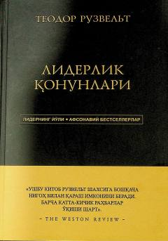

LQTeodor Ruzveltning liderlik qonunlari va muvaffaqiyatga erishish bo'yicha amaliy saboqlari.
Ushbu kitob AQShning mashhur prezidenti Teodor Ruzveltning hayotiy tajribasi va liderlik falsafasiga bag'ishlangan. Asarda muallifning yetakchilik bo'yicha yetti qonuni hamda muvaffaqiyatga erishish uchun 136 ta muhim saboq keltirilgan.